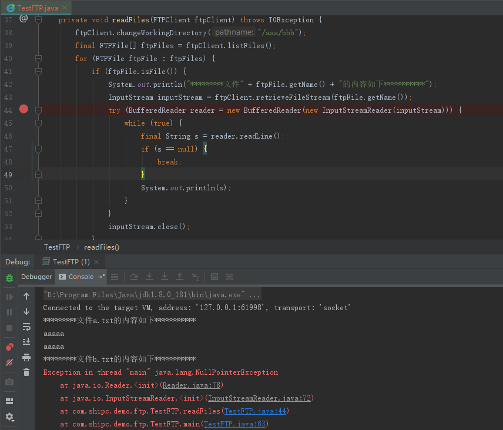
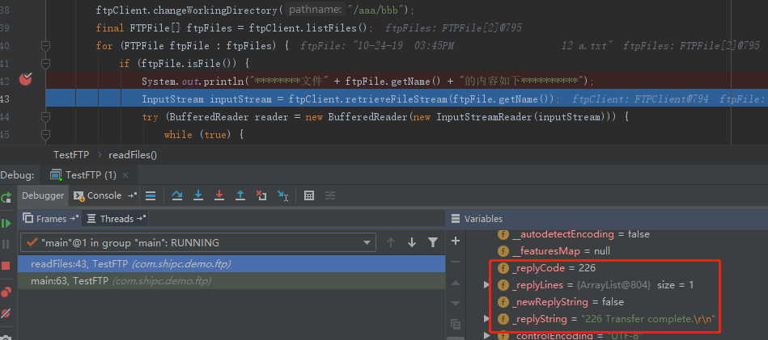
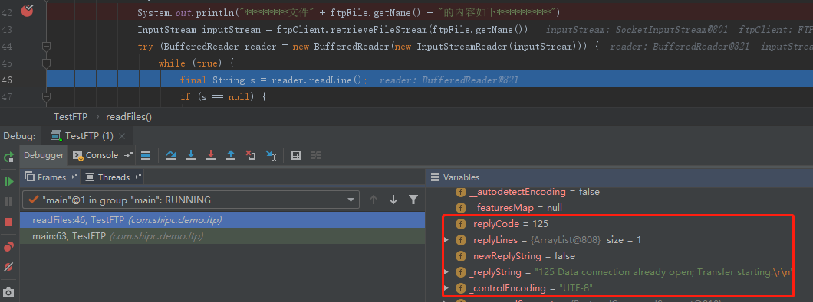
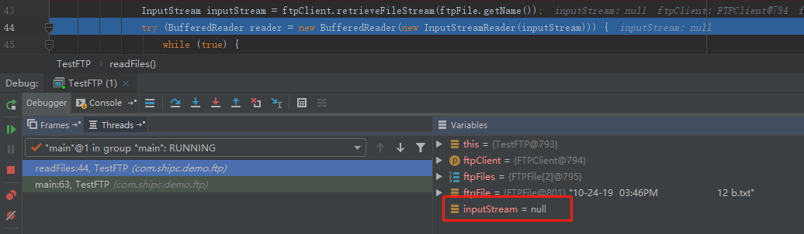

最近在使用FTPClient连续读取ftp上的多个文件内容时，遇到了两个问题：
1. 在for循环中，FTPClient只能读取到第一个文件内容，读取第二个时遇到NPE问题。
2. 遇到程序锁死。
下面就遇到问题进行还原分析，并提供解决办法：
现在使用FTPClient读取ftp服务器/aaa/bbb/目录下a.txt,b.txt两个文件
问题1：

通过Debug发现在读取第一个文件前FTPClient的_replyCode=226(226 Transter complete.) 数据传输完的状态，当开始读第一个文件之后_replyCode=125（125 Data connection already open; Transter starting.）数据传输开始正在传输，表明第一文件还没有传输完，导致读第二个文件时inputStrean为null。



解决办法是在读完第一文件之后，执行 ftpClient.completePendingCommand(); 告诉FTPClient数据已经传完。
问题2：
ftpClient.completePendingCommand(); 在读取执行执行造成锁死。
解决办法 ftpClient.completePendingCommand(); 只能在数据传输之后执行。
最后贴上完整的代码：
1 package com.shipc.demo.ftp;
2
3 import org.apache.commons.net.ftp.FTPClient;
4 import org.apache.commons.net.ftp.FTPFile;
5 import org.apache.commons.net.ftp.FTPReply;
6
7 import java.io.*;
8
9 /**
10 * @author shipc 2019/10/24 10:00
11 * @version 1.0
12 */
13 public class TestFTP {
14
15 private FTPClient connectServer() {
16 FTPClient ftpClient = new FTPClient();
17 ftpClient.setConnectTimeout(1000 * 60 * 30);
18 ftpClient.setControlEncoding("UTF-8");
19 ftpClient.enterLocalPassiveMode(); //设置被动模式，文件传输端口设置
20 try {
21 ftpClient.connect("172.17.0.16", 21);
22 ftpClient.login("ftp-user", "123456");
23 ftpClient.setFileType(FTPClient.BINARY_FILE_TYPE); // 设置文件传输模式为二进制
24 final int replyCode = ftpClient.getReplyCode();
25 if (!FTPReply.isPositiveCompletion(replyCode)) {
26 ftpClient.disconnect();
27 }
28 } catch (Exception e) {
29 System.out.println(e.getMessage());
30 }
31 return ftpClient;
32 }
33
34 private void readFiles(FTPClient ftpClient) throws IOException {
35 ftpClient.changeWorkingDirectory("/aaa/bbb");
36 final FTPFile[] ftpFiles = ftpClient.listFiles();
37 for (FTPFile ftpFile : ftpFiles) {
38 if (ftpFile.isFile()) {
39 System.out.println("********文件" + ftpFile.getName() + "的内容如下**********");
40 // ftpClient.completePendingCommand(); // 一定不能在读之前执行，否则会锁死
41
42 InputStream inputStream = ftpClient.retrieveFileStream(ftpFile.getName());
43 try (BufferedReader reader = new BufferedReader(new InputStreamReader(inputStream))) {
44 while (true) {
45 final String s = reader.readLine();
46 if (s == null) {
47 break;
48 }
49 System.out.println(s);
50 }
51 }
52 inputStream.close();
53 ftpClient.completePendingCommand(); // 每当读完一个文件时，要执行该语句
54 }
55 }
56 }
57
58 public static void main(String[] args) {
59 final TestFTP testFTP = new TestFTP();
60 FTPClient ftpClient = testFTP.connectServer();
61 try {
62 testFTP.readFiles(ftpClient);
63 } catch (IOException e) {
64 e.printStackTrace();
65 }
66 }
67 }